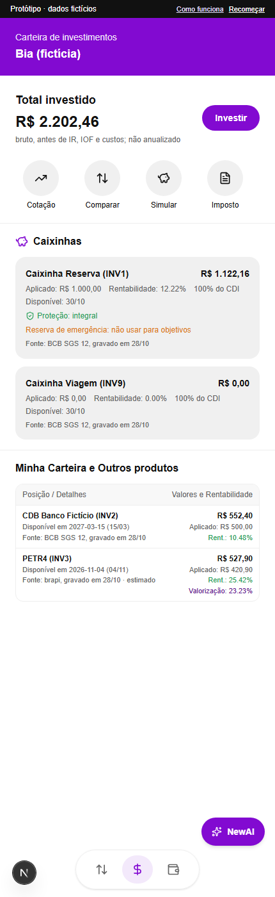
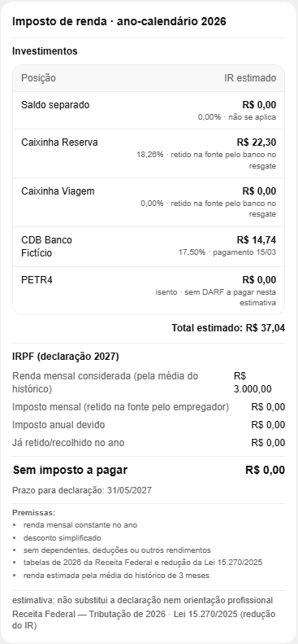
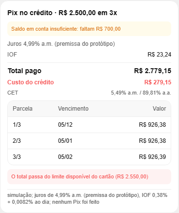

deepseek/deepseek-v4.1-flash-1017
Rodou a bateria de avaliação final, com 24 de 24 casos críticos e 16 de 16 nos demais, e a validação de 55 perguntas da Nina. Raciocínio estendido desligado.
A Nina é a assistente com IA do protótipo NewAI, dentro de um app no estilo Nubank. O modelo de linguagem entende o pedido e escolhe a ferramenta; todo valor em reais sai de um motor em TypeScript, testado e determinístico.

Num app financeiro, um número errado custa caro. Por isso o trabalho está dividido: a IA fica com a linguagem, e o código fica com tudo o que precisa estar certo.
“Todo número vem do código; o modelo de linguagem não calcula.”
Regra fixa exibida na tela “Como funciona” do app (src/contratos/textos.ts). Para cada campo em centavos, o código gera também o texto pronto em reais (valores_formatados), e a instrução IN-04 manda a Nina copiar esse texto sem arredondar nem converter.
Escolha um pedido e arraste pelas seis etapas de um turno. A cor mostra quem está agindo: a pessoa, o código ou a IA.
Um único app Next.js 16 com React 19 e TypeScript. O servidor não guarda nada entre requisições: o estado da conversa vai e volta inteiro a cada mensagem.
O app inteiro: Home, Investimentos, Conta, Cartão e “Como funciona”, com o chat da Nina por cima. Guarda a sessão no sessionStorage.
src/ui/AppNewAI.tsxCamadaChat.tsxCartaoChat.tsxTelasDetalhe.tsxcliente-api.tsQuatro rotas. Cada requisição é validada com zod; no modo público, exige código de acesso.
POST /api/sessaoPOST /api/turnoPOST /api/acaoGET /api/personasFiltra dados pessoais, monta o prompt, conduz até 3 chamadas ao modelo e até 4 ferramentas por resposta, e devolve texto, cartões e o novo estado.
src/conversa/index.tsprocessarTurno()processarAcao()instrucoes.mdChama a API do modelo no formato OpenAI, com as ferramentas descritas. Converte timeout, cota e resposta inválida em falhas F-01 a F-05.
src/conversa/provedor.tsNVIDIAOpenRouterroteirizadoCada ferramenta tem um executor que valida os argumentos e chama o motor de domínio. Funções de domínio nunca lançam exceção: devolvem um erro tipado.
src/conversa/executores/index.tssrc/dominio/*src/visaoPersonas fictícias em JSON e séries reais de mercado gravadas. Cotações ao vivo quando possível, com volta automática para o dado gravado.
dados/personas/p1–p3.jsondados/mercado/cdi.jsonsrc/mercadoBCB · brapi · CoinGeckoO provedor é escolhido pela variável LLM_PROVEDOR. São modelos rápidos de uso gratuito, chamados com temperatura zero para respostas estáveis.
deepseek/deepseek-v4.1-flash-1017Rodou a bateria de avaliação final, com 24 de 24 casos críticos e 16 de 16 nos demais, e a validação de 55 perguntas da Nina. Raciocínio estendido desligado.
minimaxai/minimax-m3.1-flashRegistrado como modelo escolhido no marco do projeto. Roda com esforço de raciocínio “low”. Qual dos dois atende a demo depende do .env.local.
Sem chave de API, o app responde a partir de um roteiro JSON (src/contratos/roteiros/cv-01.json). Serve para testes e para demonstrar sem internet.
Não há troca automática entre provedores. O turno falha com um código, a mensagem vem de um texto fixo (nunca o erro bruto do provedor) e o estado volta intacto: “Nada foi alterado.”
| Código | Causa | O que a pessoa vê |
|---|---|---|
| F-01 | TIMEOUT | A assistente não respondeu a tempo. |
| F-02 | COTA | Limite gratuito atingido, com o tempo de espera. |
| F-03 | INDISPONIVEL | A assistente está indisponível no momento. |
| F-04 | RESPOSTA_INVALIDA | Resposta malformada ou ferramenta desconhecida. |
| F-05 | LIMITE_CHAMADAS | Não consegui concluir esta etapa. |
| F-06 | ESTADO_INVALIDO | A sessão ficou inconsistente. |
| F-07 | aviso | Cotação gravada, porque a consulta ao vivo falhou. |
São 19 definidas e 18 enviadas ao modelo. A IA só escolhe e preenche os argumentos; o resultado volta do motor já com os valores em reais. Escolha uma para ver um exemplo de chamada.
Nove módulos em src/dominio, mais mercado e visão. Dinheiro em centavos inteiros, juros e impostos com decimal.js, e um calendário fixo: hoje é sempre 30/10/2026.
O coração do protótipo. Projeta o saldo dia a dia de 30/10 a 29/11 para a situação atual e para cada hipótese, e aponta a primeira falta, o menor saldo e a margem.
No mesmo dia, saídas vêm antes de entradas, a não ser que a pessoa diga o contrário. Quando essa ordem muda o resultado, a Nina pergunta qual chega primeiro.
src/dominio/caixa
Em qual fatura cai cada compra, parcelas, faturas fechada e aberta, e triagem de compra duplicada.
Calculadora própria, sem eval, para contas com números da conversa.
Rendimento pelo CDI diário composto nos dias úteis, disponibilidade e proteção de cada posição, simulação com IR regressivo e IOF, e o comparativo “e se fosse no CDI”.
Pix no crédito e compras parceladas: tabela Price, IOF de 0,38% mais 0,0082% ao dia, custo efetivo por bisseção e valor presente das parcelas pelo CDI.

IR de investimentos e IRPF anual pelas tabelas de 2026 da Receita Federal.
Seis meses de lançamentos, com filtros e somas prontas.
Propor, confirmar e cancelar movimentações simuladas. Execução única, sempre depois de um “sim” humano.
Dias úteis com feriados nacionais, sem depender do relógio do computador.
CDI do Banco Central, ações pela brapi e cripto pela CoinGecko. Cache de 60 s e volta para o dado gravado.
Recalcula os dados das telas do app a cada resposta, para a interface refletir a conversa.
A memória não fica no servidor nem no modelo. Ela é um objeto de estado que mora no navegador e guarda só o que a pessoa disse ou decidiu; os números são recalculados a cada mensagem.
Guarda o estado em sessionStorage. Fechou a aba, a sessão some.
Não guarda nada. Valida, processa o turno e devolve o estado na versão seguinte.
versaoComeça em 0 e sobe a cada turno ou ação.conversaMensagens da pessoa, da Nina e do sistema, com cartões e o rastro das ferramentas.declaracoesFatos que a pessoa afirmou e que mudam a situação atual.D1D2hipotesesCenários “e se”, até 3 ativos com até 5 alterações cada, encadeáveis.H1H1.1operacao_pendenteUma proposta de guardar dinheiro esperando confirmação.OP1operacoesMovimentações simuladas já confirmadas.contadoresGarantem que um id nunca seja reutilizado.Identidade, personalidade, 25 regras e 45 exemplos. Lidas do disco a cada turno: dá para editar sem recompilar.
Persona, conta, compromissos, posições, declarações, hipóteses e cenários, com os valores já escritos em reais.
A memória de curto prazo. Cartões e rastros antigos não voltam ao modelo.
Nome, descrição e esquema de argumentos de cada ferramenta.
Registrar uma declaração cancela a proposta pendente.
Confirmar uma movimentação descarta as hipóteses ativas, com aviso.
Mensagem com id repetido não é processada duas vezes.
“Recomeçar” ou trocar de persona cria uma sessão nova.
As proteções estão em três momentos: antes de a mensagem chegar ao modelo, nas instruções que o modelo segue e no código que confere o que ele pediu.
ate_data que o modelo inventar em consultar_investimentos é ignorada.POSSIVEL_DUPLICIDADE e a Nina pergunta antes de registrar.Toda movimentação é simulada. Mesmo assim, a Nina não pode propor e confirmar na mesma resposta: a confirmação precisa vir da pessoa, num turno seguinte ou pelo botão.
propor_movimentacao cria OP1 pendente e mostra o impacto./api/acao, sem passar pelo modelo.OPERACAO_JA_EXECUTADA.Um arquivo de texto, newai/instrucoes.md, define quem ela é e como se comporta. Ele também aparece dentro do app, na tela “Como funciona”.
Nenhum dado é real. Cada persona foi gerada por um script determinístico (npm run personas:gerar) para provocar um tipo diferente de situação.
Quer juntar dinheiro para uma viagem.
Testa guardar dinheiro numa caixinha, a reserva de emergência protegida e o comparativo da PETR4 com o CDI.
Trabalha por conta própria e recebe de clientes por Pix.
Testa a ordem no mesmo dia: aluguel e um Pix de cliente caem em 08/11. Também testa o pedido de Pix no crédito sem cartão.
Tem filhos na escola, financiamento e compras parceladas no cartão.
Testa faturas com parcelamentos em andamento, compromissos fixos pesados e simulações de parcelamento.
O relógio do computador nunca entra no cálculo, para que a mesma pergunta dê sempre o mesmo resultado.
Tudo roda a partir da pasta newai/. Sem chave de modelo configurada, o app sobe com o provedor roteirizado.
| Comando | O que faz |
|---|---|
npm run dev | Sobe o app em desenvolvimento. |
npm run build · start | Gera e serve a versão de produção. |
npm test | Vitest: domínio, contratos, conversa e interface. |
npm run e2e | Playwright no navegador, com 4 roteiros. |
npm run avaliar | Roda os 28 casos de avaliação contra o modelo real. |
npm run mercado:coletar | Grava as séries reais de CDI, PETR4 e bitcoin. |
npm run personas:gerar | Gera as três personas a partir da especificação. |
npm run typecheck · lint | Checagem de tipos e de estilo. |
| Rota | Papel |
|---|---|
POST /api/sessao | Abre a sessão de uma persona: estado na versão 0, telas e configuração. |
POST /api/turno | Processa uma mensagem: texto, cartões, avisos, rastro e novo estado. |
POST /api/acao | Confirma ou cancela uma operação, sem chamar o modelo. |
GET /api/personas | Lista as personas disponíveis. |
instrucoes.mdsrc/app/api/src/conversa/index.tssrc/conversa/provedor.tssrc/conversa/executores/src/contratos/src/dominio/src/mercado/src/visao/src/ui/dados/avaliacao/e2e/Só os nomes; os valores ficam fora do repositório.
LLM_PROVEDORNVIDIA_API_KEYNVIDIA_MODELOOPENROUTER_API_KEYOPENROUTER_MODELOLLM_ROTEIROMERCADO_AO_VIVOBRAPI_TOKENCOINGECKO_API_KEYMODOCODIGO_ACESSONEXT_PUBLIC_MARCANEXT_PUBLIC_API_EXEMPLOSOs motores têm testes unitários. A conversa é avaliada com o modelo real, e cada número da resposta é conferido contra o que o motor calcularia.
45 arquivos de Vitest, todos passando em cerca de 23 segundos, cobrindo motores, contratos, conversa e interface.
E 16 de 16 nos demais, após revisão. A primeira rodada fez 20 de 24.
Bateria de perguntas reais depois da reescrita das instruções.
Cada um define ferramenta esperada, argumentos, termos obrigatórios e proibidos.
Playwright cobre fluxo completo, uso real, refino de interface e telas responsivas.
De 28 a 30/10/2026, em duas frentes paralelas: domínio e integração; conversa, interface e avaliação.
Um vocabulário curto para ler os arquivos e os registros do projeto.
src/dominio que produz todo número.